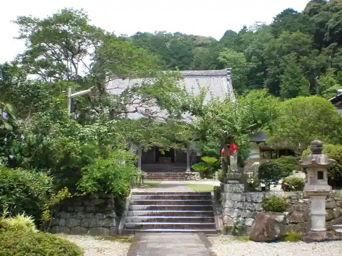
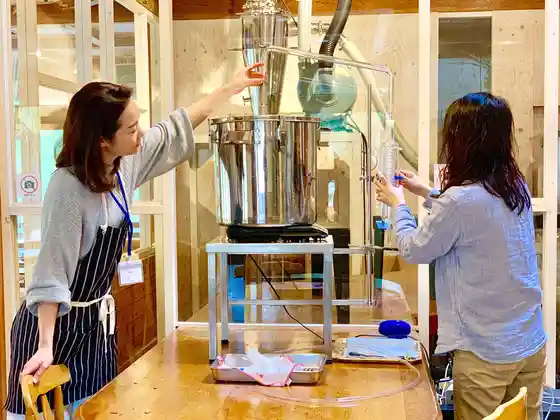

Horai Terayama Horai Tera
Shinshiro, Aichi · 0536-35-1004 · Official / source link
Io Tera (Takeda Katsuyori Ko Honjin Ato)
Shinshiro, Aichi · 0536-32-0136 · Official / source link

Chosen Experience Hakken ! Fotorogeiningu in Shinshiro (Josetsu Kosu)
Shinshiro, Aichi · 0536-23-7613 · Official / source link
Okumikawa Joryujo
Shinshiro, Aichi · 0536-32-0237 · Official / source link

Hoshizora no Seichi “ Okumikawa ”
Shinshiro, Aichi · 0536-29-9393 · Official / source link
Yutani Onsen to (Shishi Nabe)
Shinshiro, Aichi · 0536-32-1211 · Official / source link
Fureai Ranch Highlands Hausu
Shinshiro, Aichi · 0536-37-2288 · Official / source link
Oni Kubo Fureai Plaza
Shinshiro, Aichi · 0536-38-1431 · Official / source link
Horai Yu Yu
Shinshiro, Aichi · 0536-32-2212 · Official / source link
Suzukaze Village (Seseragi Eria)
Shinshiro, Aichi · 0536-39-3131 · Official / source link
Hiyahiya Land
Shinshiro, Aichi · 070-8513-7585 · Official / source link
Foresutoadobencha Shinshiro
Shinshiro, Aichi · 090-7033-0446 · Official / source link
Shinshiro General Park
Shinshiro, Aichi · 0536-25-1144 · Official / source link
Hyakken Taki
Shinshiro, Aichi · 0536-21-0015 · Official / source link
Narusawa Falls
Shinshiro, Aichi · Official / source link
Yama Biko no Oka
Shinshiro, Aichi · 0536-35-1191 · Official / source link
Nagashino Joshi Shiseki Hozon Kan
Shinshiro, Aichi · 0536-32-0162 · Official / source link
Shitaragahara Kessen Ba
Shinshiro, Aichi · 0536-22-0673 · Official / source link
Chichi Iwa Chichi Iwa Kyo
Shinshiro, Aichi · 0536-21-0015 · Official / source link
Kameyama Castle Ruins
Shinshiro, Aichi · 0536-37-2260 · Official / source link
Uri Castle Ruins
Shinshiro, Aichi · Official / source link
Kakimoto Castle Ruins
Shinshiro, Aichi · 0536-22-0673 · Official / source link
Horai Kyo Itajiki Kawa
Shinshiro, Aichi · 0536-21-0015 · Official / source link
Ribabesu Shiose
Shinshiro, Aichi · 090-3834-5109 · Official / source link
Yutani Enchi
Shinshiro, Aichi · 0536-23-7613 · Official / source link
Seiryu Yama Man Mitsudera
Shinshiro, Aichi · 0536-34-0116 · Official / source link
Aichiken Tami Forest
Shinshiro, Aichi · 0536-32-1262 · Official / source link
Roadside Station (Mokkuru Shinshiro)
Shinshiro, Aichi · 0536-24-3005 · Official / source link
Roadside Station (Horai Mikawa Mitsuishi)
Shinshiro, Aichi · 0536-34-0139 · Official / source link
Roadside Station (Tsukude Tezukuri Village)
Shinshiro, Aichi · 0536-37-2772 · Official / source link
Horai Santo Terunomiya
Shinshiro, Aichi · 0536-35-1176 · Official / source link
Shinshiro Shitaragahara History Museum
Shinshiro, Aichi · 0536-22-0673 · Official / source link
Shidare Hanamomo Village
Shinshiro, Aichi · 0536-21-0015 · Official / source link
Yutani Onsen
Shinshiro, Aichi · 0536-32-6058 · Official / source link
Sakura Fuchi Park
Shinshiro, Aichi · 0536-21-0015 · Official / source link
Atera no Shichi Taki
Shinshiro, Aichi · 0536-23-7613 · Official / source link
Yotsuya no Senmaida
Shinshiro, Aichi · 0536-21-0015 · Official / source link